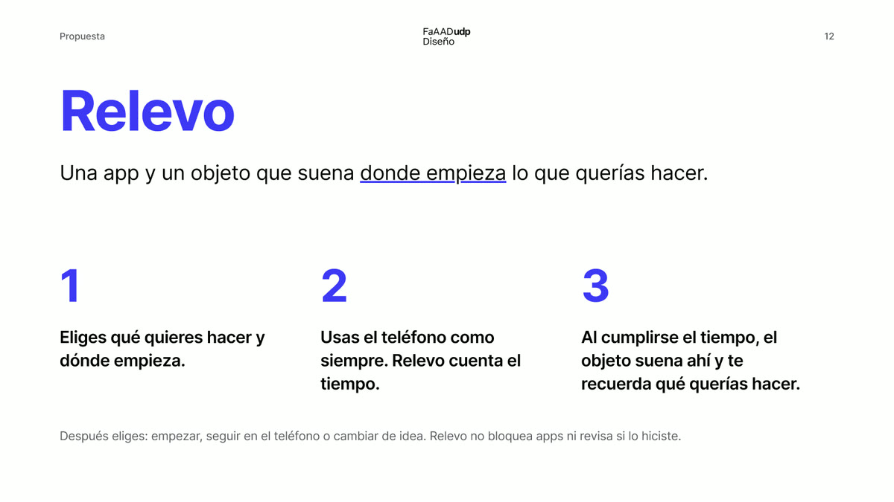
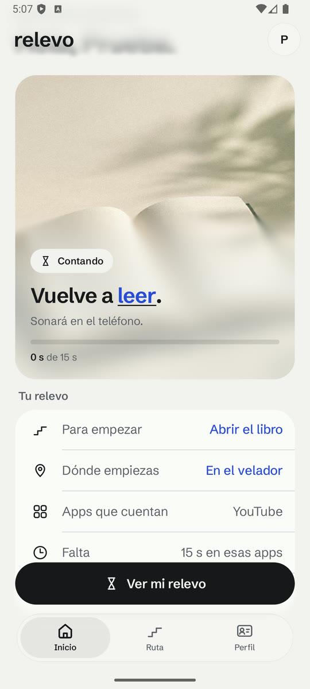

<title>El subrayado de Relevo</title>
<link rel="preconnect" href="https://fonts.googleapis.com">
<link rel="preconnect" href="https://fonts.gstatic.com" crossorigin>
<link rel="stylesheet" href="https://fonts.googleapis.com/css2?family=IBM+Plex+Mono:wght@300;400&family=Instrument+Serif:ital@0;1&family=Inter:wght@400..800&family=Schibsted+Grotesk:wght@400..800&display=swap">
<style>
/* Layout: lámina de identidad en una columna de 1080 px. La página usa la marca que propone: campo de trama con el paso de color, tarjetas de vidrio, titulares en serif y el renglón. */
:root {
  --paper: #F2F2EF; --card: #FFFFFF; --ink: #17181C; --graphite: #5B5F68; --mist: #E5E5E2; --line: #D5D6D8; --gray: #9BA0A9;
  --blue: #3D38F5; --brand: #3D38F5; --blue-soft: #ECEBFE; --ok: #1E7A46; --no: #B3261E;
  --paso: linear-gradient(90deg, #3D38F5, #9B3DF2, #F2499A, #FF7A52);
  --renglon-img: var(--paso);
  --m-paper: #F2F2EF; --m-card: #FCFCFA; --m-ink: #17181C; --m-graphite: #5B5F68; --m-mist: #E5E5E2; --m-line: #D5D6D8;
  --glass: rgba(255, 255, 255, .62); --glass-edge: rgba(255, 255, 255, .7);
  --font: "Schibsted Grotesk", "Segoe UI", system-ui, -apple-system, sans-serif;
  --display: "Instrument Serif", "Iowan Old Style", Georgia, serif; --display-weight: 400; --display-track: -0.01em;
  --mono: "IBM Plex Mono", ui-monospace, "Cascadia Mono", monospace;
  --r-card: 28px; --r-tile: 22px;
}
:root[data-serif="no"] { --display: var(--font); --display-weight: 650; --display-track: -0.025em; }
:root[data-dir="sobria"] { --renglon-img: linear-gradient(var(--blue), var(--blue)); }
:root[data-blue="app"] { --blue: #2A4BD7; --brand: #2A4BD7; --blue-soft: #EEF1FD; }
:root[data-font="inter"] { --font: "Inter", "Segoe UI", system-ui, -apple-system, sans-serif; }
@media (prefers-color-scheme: dark) {
  :root:not([data-theme="light"]) { --paper: #111215; --card: #1B1C20; --ink: #E9EAEC; --graphite: #9BA0A9; --mist: #26282D; --line: #30333A; --gray: #5B5F68; --blue: #9A97FF; --blue-soft: #23224A; --ok: #7FD1A0; --no: #F2B8B5; --glass: rgba(27, 28, 32, .62); --glass-edge: rgba(255, 255, 255, .12); color-scheme: dark; }
  :root:not([data-theme="light"])[data-blue="app"] { --blue: #8CA6FF; --blue-soft: #1C2238; }
}
:root[data-theme="dark"] { --paper: #111215; --card: #1B1C20; --ink: #E9EAEC; --graphite: #9BA0A9; --mist: #26282D; --line: #30333A; --gray: #5B5F68; --blue: #9A97FF; --blue-soft: #23224A; --ok: #7FD1A0; --no: #F2B8B5; --glass: rgba(27, 28, 32, .62); --glass-edge: rgba(255, 255, 255, .12); color-scheme: dark; }
:root[data-theme="dark"][data-blue="app"] { --blue: #8CA6FF; --blue-soft: #1C2238; }

* { box-sizing: border-box; }
body { margin: 0; background: var(--paper); color: var(--ink); font-family: var(--font); font-size: 17px; line-height: 26px; padding: 0 16px 64px; -webkit-font-smoothing: antialiased; }
button { font: inherit; color: inherit; cursor: pointer; background: none; border: 0; padding: 0; }
:focus-visible { outline: 2px solid var(--blue); outline-offset: 3px; border-radius: 10px; }
img { max-width: 100%; display: block; }
canvas { display: block; }
.num { font-variant-numeric: tabular-nums; }
:root[data-dir="sobria"] .only-exp { display: none !important; }
:root[data-dir="expresiva"] .only-sob { display: none !important; }

/* El renglón: subrayado y logotipo */
.sub { background-image: var(--renglon-img); background-repeat: no-repeat; background-size: 100% max(2px, .085em); background-position: 0 calc(100% - .02em); padding-bottom: .03em; -webkit-box-decoration-break: clone; box-decoration-break: clone; }
.wm { display: inline-block; position: relative; font-family: var(--font); font-weight: 650; letter-spacing: -0.03em; line-height: 1; padding-bottom: .17em; white-space: nowrap; width: fit-content; align-self: flex-start; }
.wm::after { content: ""; position: absolute; left: .03em; right: .03em; bottom: 0; height: .075em; background: var(--wm-line, var(--renglon-img)); }
.serif { font-family: var(--display); font-weight: var(--display-weight); letter-spacing: var(--display-track); }

/* Barra superior con las dos decisiones más visibles */
.bar { position: sticky; top: env(safe-area-inset-top, 0px); z-index: 20; margin: 0 -16px; padding: 10px 16px; background: color-mix(in srgb, var(--paper) 84%, transparent); backdrop-filter: blur(18px); -webkit-backdrop-filter: blur(18px); border-bottom: 1px solid var(--line); }
.bar-in { max-width: 1080px; margin: 0 auto; display: flex; align-items: center; gap: 10px 18px; flex-wrap: wrap; }
.bar .wm { font-size: 24px; }
.bar-note { color: var(--graphite); font-size: 14px; flex: 1 1 auto; }
.seg { display: inline-flex; align-items: center; gap: 8px; font-size: 13px; color: var(--graphite); }
.seg-in { display: inline-flex; padding: 3px; border-radius: 999px; background: var(--mist); }
.seg-in button { height: 30px; padding: 0 12px; border-radius: 999px; font-size: 13px; font-weight: 600; color: var(--graphite); white-space: nowrap; }
.seg-in button[aria-pressed="true"] { background: var(--card); color: var(--ink); box-shadow: 0 1px 3px rgba(0,0,0,.12); }

main { max-width: 1080px; margin: 0 auto; display: flex; flex-direction: column; gap: 96px; padding-top: 40px; }
section { display: flex; flex-direction: column; gap: 28px; }
.eyebrow { color: var(--graphite); font-size: 15px; line-height: 20px; font-weight: 600; }
h1 { margin: 0; font-family: var(--display); font-weight: var(--display-weight); letter-spacing: var(--display-track); font-size: clamp(40px, 6.4vw, 72px); line-height: 1.02; text-wrap: balance; }
h2 { margin: 0; font-family: var(--display); font-weight: var(--display-weight); letter-spacing: var(--display-track); font-size: clamp(34px, 4.8vw, 54px); line-height: 1.05; text-wrap: balance; max-width: 20ch; }
h3 { margin: 0; font-size: 20px; line-height: 26px; font-weight: 650; letter-spacing: -0.005em; }
p { margin: 0; }
.lede { font-size: clamp(18px, 2vw, 21px); line-height: 1.5; max-width: 62ch; }
.body { max-width: 64ch; display: flex; flex-direction: column; gap: 14px; }
.muted { color: var(--graphite); }
.small { font-size: 14px; line-height: 20px; }
.cite { color: var(--graphite); white-space: nowrap; }
.head { display: flex; flex-direction: column; gap: 10px; }

/* Portada */
.hero-field { position: relative; border-radius: 34px; overflow: hidden; min-height: 560px; display: grid; place-items: center; padding: 48px 16px; background: var(--paper); border: 1px solid var(--line); }
.hero-field canvas.bg { position: absolute; inset: 0; width: 100%; height: 100%; }
.glass { position: relative; background: var(--glass); backdrop-filter: blur(22px) saturate(1.3); -webkit-backdrop-filter: blur(22px) saturate(1.3); border: 1px solid var(--glass-edge); box-shadow: 0 18px 50px rgba(20, 16, 60, .16); }
.hero-card { border-radius: 30px; width: min(560px, 100%); padding: 34px 32px 30px; display: flex; flex-direction: column; align-items: center; gap: 18px; text-align: center; }
.hero-card .wm { font-size: 30px; align-self: center; }
.hero-card h1 { max-width: 13ch; }
.hero-card p { font-size: 17px; line-height: 24px; color: var(--ink); max-width: 36ch; }
.hero-sob { background: var(--card); border-radius: 34px; padding: 48px 32px; display: flex; flex-direction: column; gap: 22px; }
.hero-sob .wm { font-size: clamp(84px, 15vw, 180px); }

/* Referencias */
.refs-grid { display: grid; grid-template-columns: repeat(3, minmax(0, 1fr)); gap: 14px; }
@media (max-width: 860px) { .refs-grid { grid-template-columns: minmax(0, 1fr); } }
.refcard { background: var(--card); border-radius: var(--r-tile); padding: 20px; display: flex; flex-direction: column; gap: 10px; }
.refcard ul { margin: 0; padding-left: 18px; display: flex; flex-direction: column; gap: 6px; font-size: 15px; line-height: 21px; }
.map { overflow-x: auto; border-radius: var(--r-tile); background: var(--card); }
table { width: 100%; border-collapse: collapse; min-width: 680px; font-size: 15px; line-height: 21px; }
th, td { text-align: left; vertical-align: top; padding: 14px 16px; border-bottom: 1px solid var(--line); }
th { font-weight: 600; color: var(--graphite); font-size: 14px; }
tr:last-child td { border-bottom: 0; }
td:first-child { font-weight: 600; }
.tag { display: inline-flex; align-items: center; height: 24px; padding: 0 9px; border-radius: 999px; font-size: 12px; font-weight: 650; white-space: nowrap; }
.tag.yes { background: color-mix(in srgb, var(--ok) 16%, transparent); color: var(--ok); }
.tag.no { background: color-mix(in srgb, var(--no) 14%, transparent); color: var(--no); }
.tag.adapt { background: var(--blue-soft); color: var(--blue); }
.warn { background: var(--card); border-radius: var(--r-card); padding: 24px; display: flex; flex-direction: column; gap: 14px; border: 1.5px solid var(--line); }
.warn ol { margin: 0; padding-left: 20px; display: flex; flex-direction: column; gap: 10px; max-width: 74ch; }

/* Diagnóstico */
.pair { display: grid; grid-template-columns: minmax(0, 2.2fr) minmax(0, 1fr); gap: 24px; align-items: center; }
@media (max-width: 760px) { .pair { grid-template-columns: minmax(0, 1fr); } }
figure { margin: 0; display: flex; flex-direction: column; gap: 10px; min-width: 0; }
figure img { border-radius: 18px; border: 1px solid var(--line); background: #fff; }
.shot { justify-self: center; align-items: center; text-align: center; }
.shot img { width: 210px; max-width: 100%; height: auto; border-radius: 26px; }
.shot figcaption { max-width: 240px; }
figcaption { font-size: 14px; line-height: 20px; color: var(--graphite); }

/* Tríptico */
.tri { display: grid; grid-template-columns: repeat(3, minmax(0, 1fr)); gap: 16px; }
@media (max-width: 860px) { .tri { grid-template-columns: minmax(0, 1fr); } }
.tile { background: var(--card); border-radius: var(--r-card); padding: 22px; display: flex; flex-direction: column; gap: 16px; min-width: 0; }
.stage { min-height: 180px; display: grid; place-items: center; text-align: center; border-radius: 18px; background: var(--paper); padding: 18px; position: relative; overflow: hidden; }
.stage .say { font-family: var(--display); font-weight: var(--display-weight); letter-spacing: var(--display-track); font-size: 34px; line-height: 1.1; position: relative; }
.stage.deck { background: #FFFFFF; color: #17181C; }
.stage canvas { position: absolute; inset: 0; width: 100%; height: 100%; }
.stage svg { width: 100%; max-width: 260px; height: auto; position: relative; }

/* Logotipo */
.lock-grid { display: grid; grid-template-columns: repeat(4, minmax(0, 1fr)); gap: 14px; }
@media (max-width: 860px) { .lock-grid { grid-template-columns: repeat(2, minmax(0, 1fr)); } }
.lock { border-radius: var(--r-tile); aspect-ratio: 4 / 3; display: grid; place-items: center; border: 1px solid var(--line); max-width: 100%; position: relative; overflow: hidden; }
.lock .wm { font-size: clamp(34px, 5vw, 50px); position: relative; }
.lock.on-paper { background: #F2F2EF; color: #17181C; }
.lock.on-white { background: #FFFFFF; color: #17181C; }
.lock.on-blue { background: var(--brand); color: #FFFFFF; --wm-line: #FFFFFF; border-color: transparent; }
.lock.on-ink { background: #17181C; color: #F2F2EF; border-color: var(--line); }
:root[data-dir="sobria"] .lock.on-ink { --wm-line: #9A97FF; }
.lock.on-field canvas { position: absolute; inset: 0; width: 100%; height: 100%; }
.lock.on-field .glass-chip { position: relative; padding: 14px 20px 12px; border-radius: 20px; color: #17181C; background: rgba(255,255,255,.62); backdrop-filter: blur(16px); -webkit-backdrop-filter: blur(16px); border: 1px solid rgba(255,255,255,.7); }
.lock.on-field .glass-chip .wm { font-size: clamp(28px, 4vw, 40px); }
.lock-cap { font-size: 13px; line-height: 18px; color: var(--graphite); margin-top: 8px; }
.icons-row { display: flex; gap: 18px; flex-wrap: wrap; align-items: flex-end; }
.appicon { width: 96px; height: 96px; border-radius: 26px; display: grid; place-items: center; position: relative; overflow: hidden; }
.appicon canvas { position: absolute; inset: 0; width: 100%; height: 100%; }
.appicon span { font-weight: 650; font-size: 64px; line-height: 1; letter-spacing: -0.03em; position: relative; top: -6px; font-family: var(--font); }
.appicon i { position: absolute; left: 32px; right: 32px; bottom: 22px; height: 5px; }
.appicon.blue { background: var(--brand); color: #FFFFFF; } .appicon.blue i { background: #FFFFFF; }
.appicon.ink { background: #17181C; color: #F2F2EF; } .appicon.ink i { background: var(--renglon-img); }
.appicon.field { background: #FFFFFF; color: #FFFFFF; } .appicon.field i { background: #FFFFFF; }
.appicon.field span { text-shadow: 0 2px 10px rgba(20,16,60,.25); }
.appicon.round { border-radius: 50%; }
.spec { display: grid; grid-template-columns: minmax(0, 1fr) minmax(0, 1fr); gap: 16px; }
@media (max-width: 760px) { .spec { grid-template-columns: minmax(0, 1fr); } }
.spec svg { width: 100%; height: auto; }

/* Color */
.paso-bar { height: 72px; border-radius: var(--r-tile); background: var(--paso); }
:root[data-dir="sobria"] .paso-bar { background: var(--brand); }
.stops { display: grid; grid-template-columns: repeat(4, minmax(0, 1fr)); gap: 10px; }
@media (max-width: 640px) { .stops { grid-template-columns: repeat(2, minmax(0, 1fr)); } }
.stop { background: var(--card); border-radius: 18px; padding: 12px 14px; display: flex; gap: 10px; align-items: center; font-size: 14px; line-height: 19px; }
.stop i { width: 30px; height: 30px; border-radius: 50%; flex: none; }
.stop b { display: block; font-weight: 600; }
.swatches { display: grid; grid-template-columns: repeat(4, minmax(0, 1fr)); gap: 10px; }
@media (max-width: 640px) { .swatches { grid-template-columns: repeat(2, minmax(0, 1fr)); } }
.sw { border-radius: 18px; overflow: hidden; background: var(--card); display: flex; flex-direction: column; }
.sw .chip { height: 72px; display: flex; align-items: flex-end; padding: 10px 14px; font-weight: 650; font-size: 15px; }
.sw .meta { padding: 10px 14px 12px; display: flex; flex-direction: column; gap: 2px; font-size: 13px; line-height: 18px; }
.uses { display: grid; grid-template-columns: repeat(4, minmax(0, 1fr)); gap: 14px; }
@media (max-width: 860px) { .uses { grid-template-columns: repeat(2, minmax(0, 1fr)); } }
@media (max-width: 480px) { .uses { grid-template-columns: minmax(0, 1fr); } }
.use { background: var(--card); border-radius: var(--r-tile); padding: 18px; display: flex; flex-direction: column; gap: 12px; }
.use .demo { height: 64px; display: flex; align-items: center; }
.pbar { height: 6px; border-radius: 999px; background: var(--mist); overflow: hidden; }
.pbar i { display: block; height: 100%; border-radius: 999px; background: var(--renglon-img); }

/* Tipografía */
.type { background: var(--card); border-radius: var(--r-card); padding: 28px; display: grid; grid-template-columns: minmax(0, 1.1fr) minmax(0, 1fr); gap: 28px; }
@media (max-width: 760px) { .type { grid-template-columns: minmax(0, 1fr); } }
.type .aa { font-family: var(--display); font-weight: var(--display-weight); letter-spacing: var(--display-track); font-size: clamp(96px, 13vw, 160px); line-height: .92; }
.scale { display: flex; flex-direction: column; gap: 14px; }
.scale div { display: flex; flex-direction: column; gap: 2px; border-bottom: 1px solid var(--line); padding-bottom: 12px; }
.scale div:last-child { border: 0; padding: 0; }
.scale small { font-size: 13px; color: var(--graphite); }

/* Trama */
.trama-demo { display: grid; grid-template-columns: repeat(2, minmax(0, 1fr)); gap: 14px; }
@media (max-width: 640px) { .trama-demo { grid-template-columns: minmax(0, 1fr); } }
.trama-demo figure > div { aspect-ratio: 4 / 3; border-radius: 22px; overflow: hidden; border: 1px solid var(--line); background: #FFFFFF; position: relative; }
.trama-demo img, .trama-demo canvas { width: 100%; height: 100%; object-fit: cover; }
.trama-spec { display: grid; grid-template-columns: repeat(3, minmax(0, 1fr)); gap: 14px; }
@media (max-width: 760px) { .trama-spec { grid-template-columns: minmax(0, 1fr); } }

/* Reglas */
.rules { display: grid; grid-template-columns: repeat(2, minmax(0, 1fr)); gap: 14px; }
@media (max-width: 760px) { .rules { grid-template-columns: minmax(0, 1fr); } }
.rule { background: var(--card); border-radius: var(--r-tile); padding: 18px 18px 20px; display: flex; flex-direction: column; gap: 12px; }
.rule .ex { background: var(--paper); border-radius: 16px; padding: 18px; font-size: 24px; line-height: 1.3; font-family: var(--display); font-weight: var(--display-weight); letter-spacing: var(--display-track); position: relative; overflow: hidden; }
.verdict { display: inline-flex; align-items: center; gap: 6px; font-size: 14px; font-weight: 650; }
.verdict.ok { color: var(--ok); } .verdict.no { color: var(--no); }
.link-look { color: var(--blue); text-decoration: underline; text-decoration-thickness: 1px; text-underline-offset: .12em; }
.thin-gray { text-decoration: underline; text-decoration-color: var(--gray); text-decoration-thickness: 1px; text-underline-offset: .14em; }
.on-field-bad { color: #FFFFFF; font-family: var(--font); font-weight: 400; font-size: 15px; position: relative; }

/* Íconos */
.icon-tools { display: flex; flex-wrap: wrap; gap: 10px; align-items: center; }
.icon-group { display: flex; flex-direction: column; gap: 12px; }
.icon-grid { display: grid; grid-template-columns: repeat(auto-fill, minmax(108px, 1fr)); gap: 10px; }
.ic { background: var(--card); border-radius: 20px; padding: 16px 8px 12px; display: flex; flex-direction: column; align-items: center; gap: 10px; text-align: center; }
.ic svg { width: 48px; height: 48px; color: var(--ink); overflow: visible; }
.ic span { font-size: 13px; line-height: 17px; color: var(--graphite); }
.keys { display: none; }
.show-keys .keys { display: inline; }
.show-keys .ic svg { background: var(--paper); border-radius: 6px; }
.pairs { display: grid; grid-template-columns: repeat(auto-fill, minmax(240px, 1fr)); gap: 10px; }
.cmp { background: var(--card); border-radius: 20px; padding: 16px; display: flex; align-items: center; gap: 16px; }
.cmp svg { width: 40px; height: 40px; color: var(--ink); flex: none; }
.cmp .arrow { color: var(--gray); font-size: 18px; }
.cmp div { display: flex; flex-direction: column; font-size: 13px; line-height: 18px; color: var(--graphite); }
.cmp div b { color: var(--ink); font-size: 15px; font-weight: 600; }

/* Maquetas */
.mocks { display: flex; gap: 22px; flex-wrap: wrap; justify-content: center; }
.mock-wrap { display: flex; flex-direction: column; gap: 10px; align-items: center; }
.phone { width: 290px; max-width: 100%; height: 600px; border-radius: 44px; background: var(--m-paper); color: var(--m-ink); border: 8px solid #0E0F12; position: relative; overflow: hidden; display: flex; flex-direction: column; padding: 14px 16px 0; font-size: 14px; line-height: 19px; }
.phone .status { display: flex; justify-content: space-between; font-size: 12px; font-weight: 600; padding: 0 6px 10px; position: relative; z-index: 1; }
.phone .m-top { display: flex; justify-content: space-between; align-items: center; padding: 4px 2px 0; }
.phone .m-top .wm { font-size: 26px; }
.m-avatar { width: 34px; height: 34px; border-radius: 50%; background: var(--m-card); display: grid; place-items: center; }
.m-avatar svg { width: 20px; height: 20px; }
.m-date { color: var(--m-graphite); font-size: 13px; margin-top: 14px; }
.m-hello { font-family: var(--display); font-weight: var(--display-weight); letter-spacing: var(--display-track); font-size: 36px; line-height: 38px; margin-top: 2px; }
.m-card { background: var(--m-card); border-radius: 26px; margin-top: 12px; overflow: hidden; }
.m-photo { height: 112px; position: relative; overflow: hidden; }
.m-photo img, .m-photo canvas { width: 100%; height: 100%; object-fit: cover; object-position: center 60%; }
.m-body { padding: 12px 16px 16px; display: flex; flex-direction: column; gap: 8px; }
.m-chip { align-self: flex-start; display: inline-flex; align-items: center; gap: 6px; height: 26px; padding: 0 10px; border-radius: 999px; background: var(--m-mist); font-size: 12px; font-weight: 600; }
.m-chip svg { width: 14px; height: 14px; }
.m-h { font-family: var(--display); font-weight: var(--display-weight); letter-spacing: var(--display-track); font-size: 30px; line-height: 32px; }
.m-s { color: var(--m-graphite); font-size: 13px; line-height: 18px; }
.m-bar { height: 6px; border-radius: 999px; background: var(--m-mist); overflow: hidden; }
.m-bar i { display: block; height: 100%; background: var(--renglon-img); border-radius: 999px; }
.m-n { font-size: 12px; color: var(--m-graphite); }
.m-n b { color: var(--m-ink); }
.m-list { background: var(--m-card); border-radius: 22px; margin-top: 10px; }
.m-row { display: flex; align-items: center; gap: 10px; padding: 11px 14px; font-size: 13px; }
.m-row svg { width: 20px; height: 20px; flex: none; }
.m-row span { flex: 1; color: var(--m-graphite); white-space: nowrap; }
.m-row b { font-weight: 600; white-space: nowrap; }
.m-tabs { position: absolute; left: 14px; right: 14px; bottom: 14px; height: 62px; border-radius: 999px; background: rgba(252, 252, 250, .82); backdrop-filter: blur(14px); -webkit-backdrop-filter: blur(14px); box-shadow: 0 6px 22px rgba(0,0,0,.10); display: flex; padding: 5px; }
.m-tab { flex: 1; display: flex; flex-direction: column; align-items: center; justify-content: center; gap: 3px; font-size: 11px; color: var(--m-graphite); }
.m-tab svg { width: 22px; height: 22px; }
.m-tab.on { color: var(--m-ink); font-weight: 650; }
.m-x { display: flex; align-items: center; gap: 12px; padding: 2px; }
.m-x svg { width: 22px; height: 22px; }
.m-steps { flex: 1; display: flex; gap: 4px; }
.m-steps i { flex: 1; height: 4px; border-radius: 999px; background: var(--m-mist); }
.m-steps i.on { background: var(--renglon-img); }
.m-title { font-family: var(--display); font-weight: var(--display-weight); letter-spacing: var(--display-track); font-size: 36px; line-height: 38px; margin-top: 22px; }
.m-label { font-size: 12px; color: var(--m-graphite); margin-top: 20px; }
.m-field { font-size: 21px; line-height: 28px; font-weight: 500; padding: 4px 0 8px; background-image: var(--renglon-img); background-repeat: no-repeat; background-size: 100% 2.5px; background-position: 0 100%; }
.m-hint { font-size: 12px; color: var(--m-graphite); margin-top: 8px; }
.m-chips { display: flex; flex-wrap: wrap; gap: 6px; margin-top: 8px; }
.m-chips span { height: 30px; padding: 0 12px; border-radius: 999px; background: var(--m-card); display: inline-flex; align-items: center; font-size: 13px; }
.m-chips span.sel { background: #17181C; color: #F2F2EF; }
.m-btn { position: absolute; left: 16px; right: 16px; bottom: 22px; height: 50px; border-radius: 999px; background: #17181C; color: #F2F2EF; display: grid; place-items: center; font-weight: 650; font-size: 15px; z-index: 1; }
.phone.signal { background: var(--brand); color: #17181C; padding: 0; }
.phone.signal canvas.bg { position: absolute; inset: 0; width: 100%; height: 100%; }
.sig-in { position: relative; z-index: 1; display: flex; flex-direction: column; height: 100%; padding: 14px 16px 0; }
.sig-card { margin-top: auto; margin-bottom: 150px; border-radius: 28px; padding: 20px 18px; display: flex; flex-direction: column; gap: 10px; color: #17181C; background: rgba(255,255,255,.66); backdrop-filter: blur(18px) saturate(1.3); -webkit-backdrop-filter: blur(18px) saturate(1.3); border: 1px solid rgba(255,255,255,.75); }
:root[data-dir="sobria"] .sig-card { background: transparent; border-color: transparent; backdrop-filter: none; -webkit-backdrop-filter: none; color: #FFFFFF; margin-bottom: 150px; padding-left: 4px; }
:root[data-dir="sobria"] .sig-card .sub { --renglon-img: linear-gradient(#FFFFFF, #FFFFFF); }
:root[data-dir="sobria"] .phone.signal .status { color: #FFFFFF; }
.sig-card .wave { display: flex; align-items: center; gap: 8px; font-size: 13px; font-weight: 600; }
.sig-card .wave svg { width: 18px; height: 18px; }
.sig-card .big { font-family: var(--display); font-weight: var(--display-weight); letter-spacing: var(--display-track); font-size: 44px; line-height: 44px; }
.sig-card .m-s { color: inherit; opacity: .8; font-size: 15px; line-height: 21px; }
.m-btn.light { background: #FFFFFF; color: #17181C; }
.m-btn2 { position: absolute; left: 16px; right: 16px; bottom: 82px; height: 50px; border-radius: 999px; background: rgba(255,255,255,.62); backdrop-filter: blur(14px); -webkit-backdrop-filter: blur(14px); border: 1px solid rgba(255,255,255,.75); color: #17181C; display: grid; place-items: center; font-weight: 600; font-size: 15px; z-index: 1; }
:root[data-dir="sobria"] .m-btn2 { background: transparent; color: #FFFFFF; border-color: rgba(255,255,255,.6); backdrop-filter: none; -webkit-backdrop-filter: none; }
.mock-cap { font-size: 14px; color: var(--graphite); }

/* Afiches */
.posters { display: grid; grid-template-columns: repeat(3, minmax(0, 1fr)); gap: 16px; }
@media (max-width: 860px) { .posters { grid-template-columns: minmax(0, 1fr); max-width: 420px; margin: 0 auto; } }
.poster { aspect-ratio: 1272 / 1800; border-radius: 18px; overflow: hidden; position: relative; display: grid; place-items: center; padding: 9%; container-type: inline-size; border: 1px solid var(--line); max-width: 100%; }
.poster canvas.bg { position: absolute; inset: 0; width: 100%; height: 100%; }
.pA .card { position: relative; width: 100%; aspect-ratio: 3 / 4.4; border-radius: 7cqw; padding: 9cqw 7cqw 8cqw; display: flex; flex-direction: column; align-items: center; text-align: center; color: #FFFFFF; background: linear-gradient(160deg, rgba(110, 70, 200, .35), rgba(242, 73, 154, .30)); backdrop-filter: blur(14px) saturate(1.2); -webkit-backdrop-filter: blur(14px) saturate(1.2); border: 1px solid rgba(255,255,255,.35); }
.pA .card .wm { font-size: 7.5cqw; align-self: center; --wm-line: #FFFFFF; }
.pA .card h4 { margin: auto 0 0; font-family: var(--display); font-weight: var(--display-weight); letter-spacing: var(--display-track); font-size: 10cqw; line-height: 1; }
.pA .card p { margin-top: 4cqw; font-size: 3.6cqw; line-height: 1.35; opacity: .92; }
.pB { background: #DCE0F5; }
.pB .blur { position: absolute; inset: -10%; background: radial-gradient(40% 36% at 30% 32%, var(--c1) 0%, transparent 70%), radial-gradient(42% 40% at 72% 48%, var(--c3) 0%, transparent 72%), radial-gradient(46% 44% at 40% 78%, var(--c2) 0%, transparent 70%), radial-gradient(30% 30% at 80% 18%, var(--c4) 0%, transparent 70%); filter: blur(28px); }
.pB .words { position: absolute; inset: 4% 6%; font-family: var(--mono); font-weight: 300; font-size: 3.1cqw; line-height: 1.85; color: rgba(255,255,255,.62); white-space: pre; overflow: hidden; letter-spacing: .25em; }
.pB .card { position: relative; width: 100%; border-radius: 6cqw; padding: 8cqw 6cqw; text-align: center; background: #2F2F33; color: #FFFFFF; box-shadow: 0 10px 40px rgba(0,0,0,.25); }
.pB .card h4 { margin: 0; font-family: var(--display); font-weight: var(--display-weight); letter-spacing: var(--display-track); font-size: 8.4cqw; line-height: 1.02; }
.pB .card p { margin-top: 4cqw; font-size: 3.4cqw; line-height: 1.35; opacity: .85; }
.pC { background: #F4F6E6; }
.pC .card { position: relative; width: 100%; aspect-ratio: 3 / 3.6; border-radius: 6cqw; overflow: hidden; background: #FFFFFF; display: flex; flex-direction: column; align-items: center; text-align: center; box-shadow: 0 10px 40px rgba(60, 70, 20, .08); }
.pC .card .txt { padding: 8cqw 6cqw 0; display: flex; flex-direction: column; align-items: center; gap: 3cqw; position: relative; z-index: 1; }
.pC .card h4 { margin: 0; font-family: var(--display); font-weight: var(--display-weight); letter-spacing: var(--display-track); font-size: 8.6cqw; line-height: 1.02; color: #2B2B2E; }
.pC .card p { font-size: 3.3cqw; line-height: 1.35; color: #77787E; }
.pC .card .go { display: inline-flex; align-items: center; height: 8cqw; padding: 0 3.6cqw; border-radius: 1.8cqw; background: #2F2F33; color: #FFFFFF; font-size: 3.4cqw; margin-top: 1cqw; }
.pC .card canvas { position: absolute; left: 0; right: 0; bottom: 0; width: 100%; height: 62%; }
.pC .card .fade { position: absolute; left: 0; right: 0; bottom: 50%; height: 16%; background: linear-gradient(#FFFFFF, rgba(255,255,255,0)); z-index: 0; }
.slide { width: 100%; max-width: 760px; aspect-ratio: 16 / 9; background: #FFFFFF; color: #17181C; border-radius: 16px; border: 1px solid var(--line); position: relative; overflow: hidden; display: grid; grid-template-columns: 1.15fr 1fr; container-type: inline-size; }
.slide .s-left { padding: 5.5cqw; display: flex; flex-direction: column; }
.slide .s-left .wm { font-size: 3cqw; }
.slide .s-left h4 { margin: auto 0 0; font-family: var(--display); font-weight: var(--display-weight); letter-spacing: var(--display-track); font-size: 6.4cqw; line-height: 1.02; }
.slide .s-left p { margin-top: 2cqw; font-size: 1.8cqw; line-height: 1.4; color: #5B5F68; }
.slide .s-right { position: relative; }
.slide .s-right canvas { position: absolute; inset: 0; width: 100%; height: 100%; }
.slide.sob { grid-template-columns: 1fr; }
.slide.sob .s-right { display: none; }

/* Decisiones */
.decide { display: grid; grid-template-columns: repeat(2, minmax(0, 1fr)); gap: 14px; }
@media (max-width: 760px) { .decide { grid-template-columns: minmax(0, 1fr); } }
.dcard { background: var(--card); border-radius: var(--r-card); padding: 22px; display: flex; flex-direction: column; gap: 14px; }
.opts { display: flex; flex-direction: column; gap: 8px; }
.opt { display: flex; align-items: flex-start; gap: 12px; text-align: left; padding: 12px 14px; border-radius: 18px; background: var(--paper); }
.opt[aria-pressed="true"] { box-shadow: inset 0 0 0 2px var(--blue); background: var(--blue-soft); }
.opt .dot { width: 18px; height: 18px; border-radius: 50%; border: 2px solid var(--gray); flex: none; margin-top: 3px; display: grid; place-items: center; }
.opt[aria-pressed="true"] .dot { border-color: var(--blue); }
.opt[aria-pressed="true"] .dot::after { content: ""; width: 8px; height: 8px; border-radius: 50%; background: var(--blue); }
.opt b { display: block; font-weight: 600; font-size: 16px; line-height: 22px; }
.opt small { display: block; font-size: 13px; line-height: 18px; color: var(--graphite); }
.rec { display: inline-flex; align-items: center; height: 22px; padding: 0 8px; border-radius: 999px; background: var(--mist); color: var(--ink); font-size: 12px; font-weight: 600; margin-left: 6px; vertical-align: 1px; }
.list { margin: 0; padding-left: 20px; display: flex; flex-direction: column; gap: 8px; max-width: 70ch; }
.refs { display: flex; flex-direction: column; gap: 10px; font-size: 14px; line-height: 21px; color: var(--graphite); max-width: 82ch; }
.refs p { padding-left: 2em; text-indent: -2em; overflow-wrap: anywhere; }
.refs a { color: inherit; }
footer { max-width: 1080px; margin: 72px auto 0; color: var(--graphite); font-size: 13px; line-height: 19px; }
@media (prefers-reduced-motion: no-preference) { .opt, .seg-in button { transition: background .2s, box-shadow .2s; } }
</style>

<header class="bar">
  <div class="bar-in">
    <span class="wm" data-wm>relevo</span>
    <span class="bar-note">Propuesta de identidad · versión 2, con tus referencias</span>
    <span class="seg">Dirección <span class="seg-in" role="group" aria-label="Dirección"><button type="button" data-set="dir" data-val="expresiva">Con tus referencias</button><button type="button" data-set="dir" data-val="sobria">Sobria</button></span></span>
    <span class="seg">Titulares <span class="seg-in" role="group" aria-label="Titulares"><button type="button" data-set="serif" data-val="si">Serif</button><button type="button" data-set="serif" data-val="no">Grotesca</button></span></span>
  </div>
</header>

<main>
  <section>
    <div class="hero-field only-exp">
      <canvas class="bg" data-field="hero" aria-hidden="true"></canvas>
      <div class="glass hero-card">
        <span class="wm" data-wm>relevo</span>
        <h1>Vuelve a <span class="sub">lo que querías hacer</span>.</h1>
        <p>Una app y un objeto que suena donde empieza. La pantalla se vuelve trama; la trama, el lugar.</p>
      </div>
    </div>
    <div class="hero-sob only-sob">
      <span class="eyebrow">Dirección sobria (versión 1)</span>
      <span class="wm" data-wm>relevo</span>
      <h1>Subrayar <span class="sub">lo que querías hacer</span>.</h1>
    </div>
    <p class="lede">Esta versión suma tus referencias a lo que la corrección cruzada recordó de la presentación: el azul y el subrayado. Los controles de arriba cambian toda la página entre la dirección con tus referencias y la sobria de la versión 1, y entre titulares en serif o en grotesca.</p>
  </section>

  <section>
    <div class="head"><span class="eyebrow">Tus referencias</span><h2>Qué hacen y qué tomamos.</h2><p class="muted small">Tres afiches de una marca llamada Otherwise, compartidos por el autor. No se pudo verificar quién los diseñó, así que no se reproducen aquí.</p></div>
    <div class="refs-grid">
      <div class="refcard"><h3>1 · Vidrio sobre trama</h3><ul><li>Un campo de color vivo hecho de puntos, como una pantalla vista de cerca.</li><li>Una tarjeta de vidrio esmerilado encima.</li><li>Titular en serif fina; nombre y bajada en grotesca.</li></ul></div>
      <div class="refcard"><h3>2 · Letras dispersas</h3><ul><li>Un degradado desenfocado de azul a verde y violeta.</li><li>El nombre de la marca, desarmado en letras monoespaciadas, como textura.</li><li>Una tarjeta oscura con el titular en serif.</li></ul></div>
      <div class="refcard"><h3>3 · Pregunta e imagen</h3><ul><li>Una tarjeta blanca con una pregunta concreta en serif.</li><li>Un botón oscuro pequeño.</li><li>La imagen se disuelve en trama de puntos hacia abajo.</li></ul></div>
    </div>
    <div class="map"><table>
      <thead><tr><th>Recurso de tus referencias</th><th>En Relevo</th><th>Por qué</th><th></th></tr></thead>
      <tbody>
        <tr><td>Trama de puntos</td><td>La trama: fotos y fondos hechos de puntos</td><td>Los puntos son los píxeles de la pantalla y también la rejilla de un parlante: une el teléfono con el objeto.</td><td><span class="tag yes">Se toma</span></td></tr>
        <tr><td>Degradado vivo</td><td>El paso: del azul de la presentación a un color cálido</td><td>Va siempre en una dirección: de la pantalla (azul) a la actividad en la casa (cálido). Es el relevo, no un arcoíris.</td><td><span class="tag adapt">Se adapta</span></td></tr>
        <tr><td>Tarjeta de vidrio</td><td>Todo texto va en una tarjeta, nunca suelto sobre el campo</td><td>La app ya usa vidrio en la navegación (D-083) y así se lee bien sobre la trama.</td><td><span class="tag yes">Se toma</span></td></tr>
        <tr><td>Serif fina en titulares</td><td>Instrument Serif para titulares grandes; Schibsted Grotesk para la interfaz</td><td>La serif da la voz humana de los afiches. En Relevo marca lo que importa: «Vuelve a leer.»</td><td><span class="tag adapt">Por decidir</span></td></tr>
        <tr><td>Letras dispersas</td><td>Las actividades de las personas dispersas en monoespaciada</td><td>«leer», «dibujar», «caminar» flotando entre el ruido: lo que querías hacer. Solo en piezas de comunicación, no en la app.</td><td><span class="tag adapt">Se adapta</span></td></tr>
        <tr><td>Símbolo de cuatro formas</td><td>No se toma</td><td>Relevo ya tiene logotipo y renglón; un símbolo nuevo habría que explicarlo y el logotipo es lo más propio (Ward et al., 2020).</td><td><span class="tag no">No</span></td></tr>
      </tbody>
    </table></div>
    <div class="warn">
      <h3>Antes de decidir</h3>
      <ol>
        <li><b>La serif ya se rechazó una vez.</b> El 25 de septiembre rechazaste la propuesta con serif (D-068) y pediste un estudio sin serifas. Tus referencias usan una serif de titular, fina y de alto contraste, que es otro uso; por eso queda como decisión, con el control de arriba.</li>
        <li><b>Contradice la marca de septiembre.</b> D-070 y D-073 excluyeron degradados, patrones y vidrio, y nombraron los degradados morados como rasgo del diseño genérico de IA. D-083 ya devolvió el vidrio a la app.</li>
        <li><b>Es tendencia, y eso tiene dos caras.</b> Tramas de medio tono, degradados de varias capas y «una serif refinada con una grotesca neutra» aparecen entre las tendencias de 2026 <span class="cite">(Fussell, 2025)</span>. Eso hace que Relevo se vea actual, pero muchas marcas las comparten. Lo que más gusta suele combinar lo conocido con algo nuevo <span class="cite">(Hekkert et al., 2003)</span>. Aquí lo nuevo es el significado: la trama es la rejilla del parlante, el paso va de la pantalla a la casa y el renglón marca la actividad.</li>
        <li><b>No debe parecer una app de IA.</b> Relevo trata de levantar la vista de la pantalla. Por eso el campo de trama aparece en momentos puntuales (la señal, la guía, las portadas) y no en cada pantalla.</li>
      </ol>
    </div>
  </section>

  <section>
    <div class="head"><span class="eyebrow">Diagnóstico</span><h2>Hoy hay dos Relevo.</h2></div>
    <div class="pair">
      <figure><figcaption>Presentación del 30 de septiembre: «Relevo» en Inter, el azul #3D38F5 y el subrayado. Esto se recordó.</figcaption></figure>
      <figure class="shot"><figcaption>App: «relevo» en Schibsted Grotesk y tinta; el azul solo en lo que escribe la persona.</figcaption></figure>
    </div>
    <div class="body"><p>La presentación y la app usan logotipo, letra, azul y fondo distintos. Lo que se recordó fue el azul junto al subrayado, repetido en cada diapositiva. En la app domina lo que no es de Relevo: fotos beige generadas con IA, emoji y vidrio.</p></div>
  </section>

  <section>
    <div class="head"><span class="eyebrow">La idea</span><h2>La pantalla se vuelve trama; la trama, el lugar.</h2></div>
    <div class="tri">
      <div class="tile"><div class="stage" data-stage="screen"><canvas class="only-exp" data-field="stage1" aria-hidden="true"></canvas><span class="say glass only-exp" style="padding:14px 18px;border-radius:18px">Vuelve a <span class="sub">leer</span>.</span><span class="say only-sob">Vuelve a <span class="sub">leer</span>.</span></div><p class="small"><b>En la app,</b> la actividad que eligió la persona, con su renglón.</p></div>
      <div class="tile"><div class="stage deck"><span class="say">Falta recordarlo <span class="sub">a&nbsp;tiempo</span>.</span></div><p class="small"><b>En la presentación,</b> la idea que importa en cada diapositiva.</p></div>
      <div class="tile"><div class="stage" id="house-stage"></div><p class="small"><b>En la casa,</b> el objeto con su rejilla de puntos y el renglón en la base: subraya el lugar donde empieza la actividad.</p></div>
    </div>
    <div class="body">
      <p><b>El renglón,</b> lo que se recordó, sigue al centro: marca la actividad, la idea clave y, con el objeto, el lugar. La hipótesis vincula una actividad con el lugar donde comienza; el objeto subraya ese lugar como el renglón subraya una palabra.</p>
      <p><b>La trama</b> viene de tus referencias y tiene un significado propio: los puntos son los píxeles de la pantalla y son también los agujeros de la rejilla del parlante. La misma textura está en el teléfono y en el objeto.</p>
      <p><b>El paso</b> ordena el color: empieza en el azul de la presentación, que representa la pantalla, y termina en un color cálido, que representa la actividad en la casa. Un recurso de marca funciona cuando es conocido y solo evoca a esa marca <span class="cite">(Romaniuk, 2018)</span>; el color solo es lo que más se comparte <span class="cite">(Ward et al., 2020)</span>, por eso el paso va siempre unido al logotipo y al renglón.</p>
    </div>
  </section>

  <section>
    <div class="head"><span class="eyebrow">Logotipo</span><h2><span data-wm-text>relevo</span>, sobre su renglón.</h2></div>
    <div class="lock-grid">
      <div><div class="lock on-field only-exp"><canvas data-field="lock" aria-hidden="true"></canvas><span class="glass-chip"><span class="wm" data-wm>relevo</span></span></div><div class="lock on-blue only-sob"><span class="wm" data-wm>relevo</span></div><p class="lock-cap only-exp">Sobre la trama, dentro de una tarjeta de vidrio.</p><p class="lock-cap only-sob">Sobre azul: la señal y piezas cortas.</p></div>
      <div><div class="lock on-paper"><span class="wm" data-wm>relevo</span></div><p class="lock-cap">Principal: tinta sobre papel, con el renglón.</p></div>
      <div><div class="lock on-white"><span class="wm" data-wm>relevo</span></div><p class="lock-cap">Sobre blanco: presentación y papel impreso.</p></div>
      <div><div class="lock on-ink"><span class="wm" data-wm>relevo</span></div><p class="lock-cap">Sobre tinta y en modo oscuro.</p></div>
    </div>
    <div class="spec">
      <div class="tile"><h3>Medidas</h3><div id="wm-spec"></div><p class="small muted">El renglón mide lo mismo que la palabra y tiene el 7,5 % de la altura del cuerpo. Con el paso de color, a menos de 3 px se dibuja en azul liso. Tamaño mínimo: 64 px de ancho en pantalla y 18 mm en papel.</p></div>
      <div class="tile"><h3>Ícono de la app</h3><div class="icons-row"><div class="appicon field only-exp"><canvas data-field="icon" aria-hidden="true"></canvas><span>r</span><i></i></div><div class="appicon field round only-exp"><canvas data-field="icon2" aria-hidden="true"></canvas><span>r</span><i></i></div><div class="appicon blue only-sob"><span>r</span><i></i></div><div class="appicon blue round only-sob"><span>r</span><i></i></div><div class="appicon ink"><span>r</span><i></i></div></div><p class="small muted only-exp">La «r» con su renglón sobre la trama. Entre los íconos del teléfono se reconoce por la textura, que nadie más usa así.</p><p class="small muted only-sob">La «r» con su renglón. El azul es la versión principal.</p></div>
    </div>
  </section>

  <section>
    <div class="head"><span class="eyebrow">Color</span><h2>El paso: de la pantalla a la casa.</h2></div>
    <div class="paso-bar" role="img" aria-label="Degradado del paso: azul, violeta, magenta y coral"></div>
    <div class="stops only-exp" id="stops"></div>
    <div class="swatches">
      <div class="sw"><div class="chip" style="background:#17181C;color:#F2F2EF">Tinta</div><div class="meta"><b class="num">#17181C</b><span class="muted num">Texto y botones · 15,8:1</span></div></div>
      <div class="sw"><div class="chip" style="background:#F2F2EF;color:#17181C;border-bottom:1px solid var(--line)">Papel</div><div class="meta"><b class="num">#F2F2EF</b><span class="muted">Fondo de la app</span></div></div>
      <div class="sw"><div class="chip" style="background:#FFFFFF;color:#17181C;border-bottom:1px solid var(--line)">Blanco</div><div class="meta"><b class="num">#FFFFFF</b><span class="muted">Tarjetas y presentación</span></div></div>
      <div class="sw"><div class="chip" style="background:#5B5F68;color:#FFFFFF">Grafito</div><div class="meta"><b class="num">#5B5F68</b><span class="muted num">Texto secundario · 5,7:1</span></div></div>
    </div>
    <div class="uses">
      <div class="use"><div class="demo"><span class="wm" data-wm style="font-size:34px">relevo</span></div><h3>1. El logotipo</h3><p class="small muted">Siempre con su renglón.</p></div>
      <div class="use"><div class="demo serif" style="font-size:30px">Vuelve a&nbsp;<span class="sub">leer</span>.</div><h3>2. El renglón</h3><p class="small muted">La actividad y la idea clave.</p></div>
      <div class="use"><div class="demo"><div style="width:100%"><div class="pbar"><i style="width:42%"></i></div><p class="small muted" style="margin-top:8px"><b style="color:var(--ink)">6 min</b> de 15</p></div></div><h3>3. El tiempo</h3><p class="small muted">Lo que falta para la señal.</p></div>
      <div class="use"><div class="demo" id="use-tab"></div><h3>4. La trama</h3><p class="small muted only-exp">Fotos, la señal, la guía y las portadas.</p><p class="small muted only-sob">En la versión sobria, la pestaña elegida.</p></div>
    </div>
    <div class="body"><p><b>Texto siempre en tinta o blanco, sobre tarjeta.</b> El color cálido del paso no alcanza contraste para texto sobre blanco, así que solo se usa en la trama, el renglón y la barra del tiempo; el error sigue en su rojo propio. El azul de la presentación (#3D38F5) tiene el mismo contraste que el de la app (6,07:1 sobre papel).</p></div>
  </section>

  <section>
    <div class="head"><span class="eyebrow">Tipografía</span><h2>Una voz para lo que importa, otra para usar.</h2></div>
    <div class="type">
      <div><div class="aa">Aa ñ ¿?</div><p class="small muted" style="margin-top:14px" data-display-name>Instrument Serif · Rodrigo Fuenzalida y Jordan Egstad, 2023 · licencia SIL Open Font</p></div>
      <div class="scale">
        <div><small>Titular · Instrument Serif 400 · 40 / 42</small><span class="serif" style="font-size:40px;line-height:42px">¿Qué quieres hacer?</span></div>
        <div><small>Interfaz · Schibsted Grotesk 400 · 17 / 26</small><span>Usa el teléfono como siempre. Cuando sumes 15 minutos, sonará donde empiezas.</span></div>
        <div><small>Etiquetas · Schibsted Grotesk 600 · 13 / 18</small><span style="font-size:13px;line-height:18px;font-weight:600">Para empezar · Dónde empiezas</span></div>
        <div><small>Textura · IBM Plex Mono 300, solo en piezas de comunicación</small><span style="font-family:var(--mono);font-weight:300;letter-spacing:.2em;font-size:15px">l e e r   d i b u j a r   c a m i n a r</span></div>
      </div>
    </div>
    <div class="body"><p><b>La serif solo en titulares grandes</b> (28 px o más): su trazo fino no sirve en tamaños chicos. Instrument Serif es gratuita y se puede incluir en la app. La presentación cambia Inter por esta pareja, sin tocar su diagramación.</p></div>
  </section>

  <section class="only-exp">
    <div class="head"><span class="eyebrow">La trama</span><h2>Las fotos de la app, hechas de puntos.</h2></div>
    <div class="trama-demo">
      <figure><div></div><figcaption>Hoy: foto beige generada con IA, igual a la de muchas apps.</figcaption></figure>
      <figure><div><canvas data-photo="demo" aria-label="La misma foto convertida en puntos de colores: azul en las sombras y cálido en las luces." role="img"></canvas></div><figcaption>Con la trama: cada píxel pasa a ser un punto, azul en las sombras y cálido en las luces.</figcaption></figure>
    </div>
    <div class="trama-spec">
      <div class="tile"><h3>Retícula</h3><p class="small muted">Puntos cada 6 px en pantalla y cada 2 mm en papel, la medida típica de la rejilla de un parlante de mesa.</p></div>
      <div class="tile"><h3>Tamaño</h3><p class="small muted">El punto crece con la sombra de la imagen, del 20 al 100 % del paso. En las luces queda un punto mínimo, como en tus referencias.</p></div>
      <div class="tile"><h3>Color</h3><p class="small muted">Las sombras toman el azul y las luces el color cálido del paso. Nunca un arcoíris: el paso va en una sola dirección.</p></div>
    </div>
  </section>

  <section>
    <div class="head"><span class="eyebrow">El renglón</span><h2>Reglas para que siga siendo propio.</h2></div>
    <div class="rules">
      <div class="rule"><span class="verdict ok">✓ Uno por pantalla o pieza</span><div class="ex">Vuelve a <span class="sub">salir a caminar</span>.</div><p class="small muted">Marca lo que importa ahora: la actividad, el momento o el lugar.</p></div>
      <div class="rule"><span class="verdict ok">✓ Es el campo donde se escribe</span><div class="ex" style="font-family:var(--font);font-weight:500;font-size:21px"><span style="display:block;padding-bottom:8px;background-image:var(--renglon-img);background-repeat:no-repeat;background-size:100% 3px;background-position:0 100%">Leer 10 páginas</span></div><p class="small muted">Lo que escribe la persona va en tinta, sobre el renglón.</p></div>
      <div class="rule"><span class="verdict no">✕ Texto azul y subrayado</span><div class="ex">Vuelve a <span class="link-look">leer</span>.</div><p class="small muted">Azul más subrayado parece un enlace. Por eso el texto con renglón va en tinta (hoy la app lo pone en azul).</p></div>
      <div class="rule"><span class="verdict no">✕ Texto suelto sobre la trama</span><div class="ex" style="min-height:96px;display:grid;align-items:end;padding:0"><canvas data-field="bad" aria-hidden="true" style="position:absolute;inset:0;width:100%;height:100%"></canvas><span class="on-field-bad" style="padding:14px 16px">Usa el teléfono como siempre y sonará donde empiezas.</span></div><p class="small muted">Sobre la trama no se lee. El texto va en una tarjeta de vidrio, blanca o tinta.</p></div>
    </div>
  </section>

  <section>
    <div class="head"><span class="eyebrow">Íconos</span><h2>La retícula de Material, el peso de Apple.</h2></div>
    <div class="body">
      <p><b>Retícula de 24 con área útil de 20</b> y figuras guía (círculo de 20, cuadrado de 18, rectángulos de 16 × 20 y 20 × 16), como los íconos de sistema de Material Design <span class="cite">(Google, s. f.-a)</span>. <b>El trazo sigue al texto:</b> 1,75 con texto regular y 2,1 con semibold, como SF Symbols empareja cada peso con la letra <span class="cite">(Apple, s. f.)</span>. <b>Dos estados:</b> contorno y lleno para lo elegido <span class="cite">(Google, s. f.-b)</span>.</p>
      <p><b>Los propios de Relevo llevan el renglón</b> en azul liso (a este tamaño el paso no se ve). Los comunes usan formas conocidas y siempre van con palabra <span class="cite">(Isherwood et al., 2007)</span>.</p>
    </div>
    <div class="icon-tools"><span class="seg-in" role="group" aria-label="Retícula"><button type="button" id="keys-off" aria-pressed="true">Sin retícula</button><button type="button" id="keys-on" aria-pressed="false">Con retícula</button></span><span class="small muted">27 de los 97 íconos de la app, redibujados como muestra.</span></div>
    <div id="icon-groups" class="icon-group"></div>
    <h3>Antes y ahora</h3>
    <div class="pairs" id="icon-pairs"></div>
  </section>

  <section>
    <div class="head"><span class="eyebrow">Aplicaciones</span><h2>Así se vería.</h2><p class="muted small">Maquetas de la propuesta, no capturas de la app. La foto es una imagen de la app generada con IA.</p></div>
    <div class="mocks">
      <div class="mock-wrap"><div class="phone" aria-label="Maqueta de Inicio">
        <div class="status"><span class="num">10:24</span><span>●●●</span></div>
        <div class="m-top"><span class="wm" data-wm>relevo</span><span class="m-avatar" data-icon="perfil"></span></div>
        <div class="m-date">Miércoles 30 de septiembre</div>
        <div class="m-hello">Hola.</div>
        <div class="m-card"><div class="m-photo"><canvas class="only-exp" data-photo="mock" aria-hidden="true"></canvas></div>
          <div class="m-body"><span class="m-chip"><span data-icon="esperando"></span>Contando</span><div class="m-h">Vuelve a <span class="sub">leer</span>.</div><div class="m-s">Sonará junto al sillón cuando sumes 15 min en tus apps.</div><div class="m-bar"><i style="width:40%"></i></div><div class="m-n num"><b>6 min</b> de 15</div></div></div>
        <div class="m-list"><div class="m-row"><span data-icon="primerpaso"></span><span>Para empezar</span><b>Abrir el libro</b></div></div>
        <div class="m-tabs"><div class="m-tab on"><span data-icon="inicio" data-filled></span><span class="sub">Inicio</span></div><div class="m-tab"><span data-icon="ruta"></span>Ruta</div><div class="m-tab"><span data-icon="perfil"></span>Perfil</div></div>
      </div><span class="mock-cap">Inicio</span></div>

      <div class="mock-wrap"><div class="phone" aria-label="Maqueta de preparar un relevo">
        <div class="status"><span class="num">10:21</span><span>●●●</span></div>
        <div class="m-x"><span data-icon="cerrar"></span><div class="m-steps"><i class="on"></i><i></i><i></i><i></i></div></div>
        <div class="m-title">¿Qué quieres hacer?</div>
        <div class="m-label">Actividad</div>
        <div class="m-field">Leer 10 páginas</div>
        <div class="m-hint">Escribe lo que quieres hacer o toca una idea.</div>
        <div class="m-label">Ideas</div>
        <div class="m-chips"><span class="sel">Leer</span><span>Dibujar</span><span>Salir a caminar</span><span>Ordenar</span><span>Cocinar</span><span>Tocar guitarra</span></div>
        <div class="m-btn">Seguir</div>
      </div><span class="mock-cap">Preparar un relevo</span></div>

      <div class="mock-wrap"><div class="phone signal" aria-label="Maqueta de la pantalla cuando suena la señal">
        <canvas class="bg only-exp" data-field="signal" aria-hidden="true"></canvas>
        <div class="sig-in">
          <div class="status"><span class="num">10:39</span><span>●●●</span></div>
          <div class="sig-card">
            <span class="wm" data-wm style="font-size:20px">relevo</span>
            <div class="wave"><span data-icon="senal"></span>Sonando junto al sillón</div>
            <div class="big">Vuelve a <span class="sub">leer</span>.</div>
            <div class="m-s">Para empezar: abrir el libro.</div>
          </div>
        </div>
        <div class="m-btn2">Seguir en el teléfono</div>
        <div class="m-btn light">Silenciar y empezar</div>
      </div><span class="mock-cap">Cuando suena: la trama late con la señal</span></div>
    </div>

    <h3 class="only-exp">Afiches, en los formatos de tus referencias</h3>
    <div class="posters only-exp">
      <div class="poster pA"><canvas class="bg" data-field="posterA" aria-hidden="true"></canvas><div class="card"><span class="wm" data-wm>relevo</span><h4>Vuelve a lo que querías hacer</h4><p>Una app y un objeto que suena donde empieza.</p></div></div>
      <div class="poster pB"><div class="blur" aria-hidden="true"></div><div class="words" id="words" aria-hidden="true"></div><div class="card"><h4>Lo que querías hacer sigue ahí</h4><p>Relevo te lo recuerda en el lugar donde empieza.</p></div></div>
      <div class="poster pC"><div class="card"><div class="txt"><h4>¿Leer diez páginas antes de dormir?</h4><p>Sonará junto al sillón cuando sumes 15 minutos en tus apps.</p><span class="go">Preparar un relevo →</span></div><div class="fade" aria-hidden="true"></div><canvas data-photo="poster" aria-hidden="true"></canvas></div></div>
    </div>

    <h3>La portada de la presentación</h3>
    <div class="slide" id="slide" aria-label="Maqueta de la portada de la presentación con la identidad propuesta">
      <div class="s-left"><span class="wm" data-wm>relevo</span><h4>Vuelve a lo que querías hacer <span class="sub">a&nbsp;tiempo</span>.</h4><p>Sistema phygital para recuperar intenciones personales durante el ocio digital.</p></div>
      <div class="s-right"><canvas data-field="slide" aria-hidden="true"></canvas></div>
    </div>
  </section>

  <section>
    <div class="head"><span class="eyebrow">Para cerrar</span><h2>Lo que falta decidir.</h2><p class="muted small">Al elegir, la página cambia. Las recomendaciones están marcadas.</p></div>
    <div class="decide">
      <div class="dcard"><h3>Dirección</h3><div class="opts">
        <button type="button" class="opt" data-set="dir" data-val="expresiva"><span class="dot"></span><span><b>Con tus referencias <span class="rec">Recomendada</span></b><small>Trama, paso de color, vidrio y renglón. Más notoria, y las imágenes pasan a ser propias.</small></span></button>
        <button type="button" class="opt" data-set="dir" data-val="sobria"><span class="dot"></span><span><b>Sobria (versión 1)</b><small>Tinta, papel, un azul y el renglón. Más cerca de la marca de septiembre.</small></span></button></div></div>
      <div class="dcard"><h3>Titulares</h3><div class="opts">
        <button type="button" class="opt" data-set="serif" data-val="si"><span class="dot"></span><span><b>Instrument Serif <span class="rec">Recomendada</span></b><small>Como en tus referencias. Revierte el «sin serifas» del 25 de septiembre.</small></span></button>
        <button type="button" class="opt" data-set="serif" data-val="no"><span class="dot"></span><span><b>Schibsted Grotesk</b><small>Una sola letra para todo, como hoy en la app.</small></span></button></div></div>
      <div class="dcard"><h3>Color cálido del paso</h3><div class="opts">
        <button type="button" class="opt" data-set="warm" data-val="coral"><span class="dot"></span><span><b>Coral <span class="rec">Recomendado</span></b><small>Azul, violeta, magenta y coral. Más cálido, más de casa.</small></span></button>
        <button type="button" class="opt" data-set="warm" data-val="magenta"><span class="dot"></span><span><b>Magenta</b><small>Azul, violeta y magenta. Más frío y más cerca de tus referencias.</small></span></button></div></div>
      <div class="dcard"><h3>Lo demás, como en la versión 1</h3><div class="opts">
        <button type="button" class="opt" data-set="case" data-val="lower"><span class="dot"></span><span><b>«relevo» en minúsculas <span class="rec">Recomendado</span></b><small>Sigue al de la app.</small></span></button>
        <button type="button" class="opt" data-set="case" data-val="upper"><span class="dot"></span><span><b>«Relevo» con mayúscula</b><small>Sigue al título de la presentación.</small></span></button>
        <button type="button" class="opt" data-set="blue" data-val="deck"><span class="dot"></span><span><b>Azul #3D38F5, el de la presentación <span class="rec">Recomendado</span></b><small>Es el que se recordó.</small></span></button>
        <button type="button" class="opt" data-set="blue" data-val="app"><span class="dot"></span><span><b>Azul #2A4BD7, el de la app</b><small>El «azul pasta» de D-073.</small></span></button></div></div>
    </div>
    <div class="tile"><h3>Qué cambia si se aprueba</h3>
      <ul class="list small">
        <li><b>App 2.19:</b> el logotipo con renglón, la paleta del paso, Instrument Serif en titulares (si se elige), la trama en las fotos y en la pantalla de la señal, el campo renglón, la barra del tiempo, el ícono de la app y los 97 íconos redibujados.</li>
        <li><b>Presentación:</b> la pareja de letras, el logotipo y la trama en la portada.</li>
        <li><b>Figma:</b> sistema 3.0 con la trama como estilo, los íconos como componentes y los afiches.</li>
        <li><b>Se mantienen</b> los emoji del perfil y el vidrio de la navegación (D-083). Las fotos beige dejan de usarse tal cual: pasan por la trama.</li>
      </ul></div>
  </section>

  <section>
    <div class="head"><span class="eyebrow">Fuentes</span></div>
    <div class="refs">
      <p>Apple. (s. f.). <i>SF Symbols</i>. Human Interface Guidelines. <a href="https://developer.apple.com/design/human-interface-guidelines/sf-symbols">https://developer.apple.com/design/human-interface-guidelines/sf-symbols</a></p>
      <p>Fussell, G. (2025, 31 de octubre). <i>Graphic design trends 2026: 8 styles shaping visual culture</i>. Envato Elements. <a href="https://elements.envato.com/learn/graphic-design-trends">https://elements.envato.com/learn/graphic-design-trends</a></p>
      <p>Google. (s. f.-a). <i>System icons</i>. Material Design. <a href="https://m2.material.io/design/iconography/system-icons.html">https://m2.material.io/design/iconography/system-icons.html</a></p>
      <p>Google. (s. f.-b). <i>Material Symbols guide</i>. Google Fonts for Developers. <a href="https://developers.google.com/fonts/docs/material_symbols">https://developers.google.com/fonts/docs/material_symbols</a></p>
      <p>Hekkert, P., Snelders, D. y van Wieringen, P. C. W. (2003). «Most advanced, yet acceptable»: Typicality and novelty as joint predictors of aesthetic preference in industrial design. <i>British Journal of Psychology, 94</i>(1), 111–124. <a href="https://doi.org/10.1348/000712603762842147">https://doi.org/10.1348/000712603762842147</a></p>
      <p>Isherwood, S. J., McDougall, S. J. P. y Curry, M. B. (2007). Icon identification in context: The changing role of icon characteristics with user experience. <i>Human Factors, 49</i>(3), 465–476. <a href="https://doi.org/10.1518/001872007X200102">https://doi.org/10.1518/001872007X200102</a></p>
      <p>Romaniuk, J. (2018). <i>Building distinctive brand assets</i>. Oxford University Press.</p>
      <p>Ward, E., Yang, S., Romaniuk, J. y Beal, V. (2020). Building a unique brand identity: Measuring the relative ownership potential of brand identity element types. <i>Journal of Brand Management, 27</i>(4), 393–407. <a href="https://doi.org/10.1057/s41262-020-00187-6">https://doi.org/10.1057/s41262-020-00187-6</a></p>
    </div>
  </section>
</main>
<footer>Propuesta para el proyecto de título de Relevo, Escuela de Diseño UDP. Pendiente de la decisión del autor; no reemplaza el sistema vigente hasta aprobarse. Las referencias Otherwise pertenecen a sus autores y no se reproducen.</footer>

<script>
(function () {
  const root = document.documentElement;
  const NS = 'http://www.w3.org/2000/svg';
  const reduce = window.matchMedia('(prefers-reduced-motion: reduce)').matches;

  // ---- Paletas del paso ----
  const WARM = { coral: ['#9B3DF2', '#F2499A', '#FF7A52'], magenta: ['#7A3BF0', '#C03FE8', '#F2499A'] };
  const NAMES = { coral: ['Violeta', 'Magenta', 'Coral'], magenta: ['Violeta', 'Fucsia', 'Magenta'] };
  const state = { dir: 'expresiva', serif: 'si', warm: 'coral', font: 'schibsted', blue: 'deck', case: 'lower' };
  try { Object.assign(state, JSON.parse(localStorage.getItem('relevo-identidad-v2') || '{}')); } catch (e) {}
  const blueHex = () => state.blue === 'app' ? '#2A4BD7' : '#3D38F5';
  const stopsHex = () => [blueHex()].concat(WARM[state.warm] || WARM.coral);
  const hexRgb = (h) => { const n = parseInt(h.slice(1), 16); return [(n >> 16) & 255, (n >> 8) & 255, n & 255]; };
  function paletteAt(stops, p) {
    p = Math.min(1, Math.max(0, p));
    const seg = (stops.length - 1) * p, i = Math.min(stops.length - 2, Math.floor(seg)), f = seg - i, a = stops[i], b = stops[i + 1];
    return [a[0] + (b[0] - a[0]) * f, a[1] + (b[1] - a[1]) * f, a[2] + (b[2] - a[2]) * f];
  }
  const cssVar = (n) => getComputedStyle(root).getPropertyValue(n).trim();

  // ---- Trama: campo de cintas y fotos hechas de puntos ----
  function sizeCanvas(cv) {
    const dpr = Math.min(2, window.devicePixelRatio || 1);
    const w = cv.clientWidth, h = cv.clientHeight; if (!w || !h) return null;
    const W = Math.round(w * dpr), H = Math.round(h * dpr);
    if (cv.width !== W || cv.height !== H) { cv.width = W; cv.height = H; }
    const ctx = cv.getContext('2d'); ctx.setTransform(dpr, 0, 0, dpr, 0, 0);
    return { ctx, w, h };
  }
  const FIELDS = {
    hero: { pitch: 8, seed: 0.2, bg: 'paper' }, stage1: { pitch: 6, seed: 1.7, bg: 'paper' }, lock: { pitch: 5, seed: 2.6, bg: '#F2F2EF' },
    icon: { pitch: 4, seed: 0.9, bg: '#FFFFFF', dense: true }, icon2: { pitch: 4, seed: 3.1, bg: '#FFFFFF', dense: true }, signal: { pitch: 7, seed: 1.1, bg: '#E9E8F4', dense: true },
    posterA: { pitch: 5, seed: 0.5, bg: '#E4E3EE' }, slide: { pitch: 6, seed: 2.2, bg: '#FFFFFF', dense: true }, bad: { pitch: 5, seed: 4.2, bg: '#FFFFFF', dense: true }
  };
  function drawField(cv, t) {
    const conf = FIELDS[cv.dataset.field] || FIELDS.hero;
    const s = sizeCanvas(cv); if (!s) return;
    const { ctx, w, h } = s, pitch = conf.pitch, cols = Math.ceil(w / pitch), rows = Math.ceil(h / pitch);
    const bg = conf.bg === 'paper' ? cssVar('--paper') : conf.bg;
    ctx.fillStyle = bg; ctx.fillRect(0, 0, w, h);
    const dark = conf.bg === 'paper' && (root.dataset.theme === 'dark' || (!root.dataset.theme && window.matchMedia('(prefers-color-scheme: dark)').matches));
    const faint = dark ? 'rgba(255,255,255,.10)' : 'rgba(80,80,140,.16)';
    const stops = stopsHex().map(hexRgb), sd = conf.seed;
    const pulseOn = cv.dataset.field === 'signal';
    for (let j = 0; j < rows; j++) {
      for (let i = 0; i < cols; i++) {
        const nx = i / cols, ny = j / rows;
        const a = Math.sin((nx * 1.5 + ny * 0.8) * 3.6 + t * 0.6 + sd);
        const b = Math.sin((-nx * 0.7 + ny * 1.6) * 3.3 - t * 0.45 + 1.3 + sd * 0.7);
        const c = Math.sin((nx * 2.1 - ny * 0.6) * 2.8 + t * 0.3 + 2.1 + sd * 0.4);
        let v = a * 0.55 + b * 0.35 + c * 0.2;
        v = 1 / (1 + Math.exp(-3.4 * (v - (conf.dense ? -0.35 : 0.1))));
        const x = i * pitch + pitch / 2, y = j * pitch + pitch / 2;
        if (v < 0.16) { ctx.fillStyle = faint; ctx.beginPath(); ctx.arc(x, y, pitch * 0.17, 0, 6.2832); ctx.fill(); continue; }
        const p = nx * 0.62 + (1 - ny) * 0.3 + a * 0.16 + 0.02;
        const col = paletteAt(stops, p);
        const pulse = pulseOn ? 1 + 0.16 * Math.sin(t * 5.4 - (nx + ny) * 7) : 1;
        ctx.fillStyle = 'rgb(' + (col[0] | 0) + ',' + (col[1] | 0) + ',' + (col[2] | 0) + ')';
        ctx.beginPath(); ctx.arc(x, y, Math.min(pitch * 0.56, pitch * 0.5 * (0.24 + 0.8 * v) * pulse), 0, 6.2832); ctx.fill();
      }
    }
  }
  const photo = new Image(); let photoReady = false;
  photo.onload = () => { photoReady = true; drawPhotos(); };
  photo.src = 'img/foto-leer.jpg';
  function drawPhotoTrama(cv) {
    if (!photoReady) return;
    const s = sizeCanvas(cv); if (!s) return;
    const { ctx, w, h } = s, pitch = cv.dataset.photo === 'mock' ? 4 : 6, cols = Math.ceil(w / pitch), rows = Math.ceil(h / pitch);
    const off = document.createElement('canvas'); off.width = cols; off.height = rows;
    const o = off.getContext('2d', { willReadFrequently: true });
    const ir = photo.naturalWidth / photo.naturalHeight, cr = cols / rows;
    let sw, sh, sx, sy;
    if (ir > cr) { sh = photo.naturalHeight; sw = sh * cr; sx = (photo.naturalWidth - sw) / 2; sy = 0; } else { sw = photo.naturalWidth; sh = sw / cr; sx = 0; sy = (photo.naturalHeight - sh) * 0.55; }
    o.drawImage(photo, sx, sy, sw, sh, 0, 0, cols, rows);
    let data; try { data = o.getImageData(0, 0, cols, rows).data; } catch (e) { return; }
    let lo = 1, hi = 0; const dk = new Float32Array(cols * rows);
    for (let k = 0; k < cols * rows; k++) { const d = 1 - (0.2126 * data[k * 4] + 0.7152 * data[k * 4 + 1] + 0.0722 * data[k * 4 + 2]) / 255; dk[k] = d; if (d < lo) lo = d; if (d > hi) hi = d; }
    const span = Math.max(0.05, hi - lo), stops = stopsHex().map(hexRgb);
    ctx.fillStyle = '#FFFFFF'; ctx.fillRect(0, 0, w, h);
    for (let j = 0; j < rows; j++) for (let i = 0; i < cols; i++) {
      const d = (dk[j * cols + i] - lo) / span, x = i * pitch + pitch / 2, y = j * pitch + pitch / 2;
      if (d < 0.06) { ctx.fillStyle = 'rgba(80,80,140,.14)'; ctx.beginPath(); ctx.arc(x, y, pitch * 0.15, 0, 6.2832); ctx.fill(); continue; }
      const col = paletteAt(stops, (1 - d * 0.95) * 0.8 + (i / cols) * 0.2);
      ctx.fillStyle = 'rgb(' + (col[0] | 0) + ',' + (col[1] | 0) + ',' + (col[2] | 0) + ')';
      ctx.beginPath(); ctx.arc(x, y, pitch * 0.5 * (0.2 + 0.85 * Math.pow(d, 0.8)), 0, 6.2832); ctx.fill();
    }
  }
  function drawPhotos() { document.querySelectorAll('canvas[data-photo]').forEach(drawPhotoTrama); }
  function drawFields(t) { document.querySelectorAll('canvas[data-field]').forEach((cv) => { if (cv.offsetParent !== null) drawField(cv, t); }); }

  // Animación suave solo en la portada y en la señal, cuando se ven.
  const live = new Set();
  if (!reduce && 'IntersectionObserver' in window) {
    const io = new IntersectionObserver((es) => es.forEach((e) => { if (e.isIntersecting) live.add(e.target); else live.delete(e.target); }), { threshold: 0.05 });
    document.querySelectorAll('canvas[data-field="hero"], canvas[data-field="signal"]').forEach((c) => io.observe(c));
    let t = 0, last = 0;
    const loop = (now) => { if (now - last > 90 && state.dir === 'expresiva' && document.visibilityState === 'visible') { last = now; t += 0.04; live.forEach((c) => drawField(c, t)); } requestAnimationFrame(loop); };
    requestAnimationFrame(loop);
  }

  // ---- Letras dispersas del afiche ----
  function words() {
    const box = document.getElementById('words'); if (!box) return;
    const list = ['leer', 'dibujar', 'caminar', 'cocinar', 'ordenar', 'estirar', 'escribir', 'pintar', 'dormir', 'estudiar'];
    let seed = 7; const rnd = () => { seed = (seed * 16807) % 2147483647; return seed / 2147483647; };
    const lines = [];
    for (let r = 0; r < 26; r++) {
      let line = '';
      while (line.length < 30) {
        const wd = list[Math.floor(rnd() * list.length)];
        line += wd.split('').map((ch) => rnd() < 0.42 ? ' ' : ch).join('') + ' '.repeat(1 + Math.floor(rnd() * 4));
      }
      lines.push(line.slice(0, 30));
    }
    box.textContent = lines.join('\n');
  }

  // ---- Íconos: retícula de 24, trazo 1,75, extremos redondeados; accent = renglón ----
  const ICONS = {
    inicio: { label: 'Inicio', parts: [{ d: 'M5 10.4V18.6Q5 20.5 6.9 20.5H17.1Q19 20.5 19 18.6V10.4' }, { d: 'M3.4 11.6L12 4.1L20.6 11.6' }, { d: 'M10 20.5V16.3Q10 14.4 12 14.4Q14 14.4 14 16.3V20.5' }],
      filled: [{ d: 'M5 10.6L12 4.6L19 10.6V18.6Q19 20.5 17.1 20.5H14V16.3Q14 14.4 12 14.4Q10 14.4 10 16.3V20.5H6.9Q5 20.5 5 18.6Z', fill: 'ink' }, { d: 'M3.4 11.6L12 4.1L20.6 11.6' }] },
    ruta: { label: 'Ruta', parts: [{ d: 'M7.75 18.5H15A3.25 3.25 0 0 0 15 12H9A3.25 3.25 0 0 1 9 5.5H16.25' }, { c: [5.5, 18.5, 2.25] }, { c: [18.5, 5.5, 2.25] }],
      filled: [{ d: 'M7.75 18.5H15A3.25 3.25 0 0 0 15 12H9A3.25 3.25 0 0 1 9 5.5H16.25' }, { c: [5.5, 18.5, 2.25], fill: 'ink' }, { c: [18.5, 5.5, 2.25], fill: 'ink' }] },
    perfil: { label: 'Perfil', parts: [{ c: [12, 12, 9.1] }, { c: [12, 9.7, 3.1] }, { d: 'M6.7 18.3Q8.5 15 12 15Q15.5 15 17.3 18.3' }],
      filled: [{ c: [12, 12, 9.1], fill: 'ink' }, { c: [12, 9.7, 3.1], fill: 'bg', stroke: 'none' }, { d: 'M6.6 18.5Q8.4 15.2 12 15.2Q15.6 15.2 17.4 18.5Q15.1 20.4 12 20.4Q8.9 20.4 6.6 18.5Z', fill: 'bg', stroke: 'none' }] },
    actividad: { label: 'Actividad', parts: [{ d: 'M5.3 18.7L6 14.75L15.4 5.35L18.65 8.6L9.25 18Z' }, { d: 'M13.4 7.35L16.65 10.6' }, { d: 'M3.5 21.1H20.5', accent: true }] },
    lugar: { label: 'Dónde empiezas', parts: [{ d: 'M12 18.75C12 18.75 6 13.9 6 9.25A6 6 0 0 1 18 9.25C18 13.9 12 18.75 12 18.75Z' }, { c: [12, 9.25, 2.1] }, { d: 'M6.75 21.1H17.25', accent: true }] },
    parlante: { label: 'Parlante', parts: [{ d: 'M9.5 2.75H14.5Q17 2.75 17 5.25V15.75Q17 18.25 14.5 18.25H9.5Q7 18.25 7 15.75V5.25Q7 2.75 9.5 2.75Z' }, { c: [12, 12.6, 2.6] }, { c: [12, 6.6, 1.05], fill: 'ink', stroke: 'none' }, { d: 'M5 21.1H19', accent: true }] },
    primerpaso: { label: 'Para empezar', parts: [{ d: 'M9 17V12H14V7H19.75' }, { d: 'M4.25 17H9', accent: true }] },
    apps: { label: 'Apps elegidas', parts: [{ r: [3.25, 3.25, 7.5, 7.5, 2.25] }, { r: [13.25, 3.25, 7.5, 7.5, 2.25], accent: true, fill: 'accent' }, { r: [3.25, 13.25, 7.5, 7.5, 2.25] }, { r: [13.25, 13.25, 7.5, 7.5, 2.25] }] },
    senal: { label: 'Señal', parts: [{ d: 'M4.75 9.25H7.25L11.1 5.9Q12.25 4.95 12.25 6.45V17.55Q12.25 19.05 11.1 18.1L7.25 14.75H4.75Q3.75 14.75 3.75 13.75V10.25Q3.75 9.25 4.75 9.25Z' }, { d: 'M15.6 9.1A4.1 4.1 0 0 1 15.6 14.9' }, { d: 'M18.1 6.6A7.6 7.6 0 0 1 18.1 17.4' }] },
    silenciar: { label: 'Silenciar', parts: [{ d: 'M4.75 9.25H7.25L11.1 5.9Q12.25 4.95 12.25 6.45V17.55Q12.25 19.05 11.1 18.1L7.25 14.75H4.75Q3.75 14.75 3.75 13.75V10.25Q3.75 9.25 4.75 9.25Z' }, { d: 'M15.75 9.75L20.25 14.25M20.25 9.75L15.75 14.25' }] },
    telefono: { label: 'Este teléfono', parts: [{ d: 'M9.25 2.75H14.75Q17.25 2.75 17.25 5.25V18.75Q17.25 21.25 14.75 21.25H9.25Q6.75 21.25 6.75 18.75V5.25Q6.75 2.75 9.25 2.75Z' }, { d: 'M10.5 18.25H13.5' }] },
    tiempo: { label: 'Tiempo', parts: [{ c: [12, 12, 9.1] }, { d: 'M12 7.25V12L15.25 14' }] },
    esperando: { label: 'Contando', parts: [{ d: 'M6.5 3.25H17.5M6.5 20.75H17.5' }, { d: 'M7.75 3.25C7.75 8.25 12 9.5 12 12C12 14.5 7.75 15.75 7.75 20.75' }, { d: 'M16.25 3.25C16.25 8.25 12 9.5 12 12C12 14.5 16.25 15.75 16.25 20.75' }, { d: 'M9.4 20.75C9.6 18.9 12 17.9 12 17.9C12 17.9 14.4 18.9 14.6 20.75Z', fill: 'ink', stroke: 'none' }] },
    agregar: { label: 'Agregar', parts: [{ d: 'M12 5V19M5 12H19' }] },
    editar: { label: 'Editar', parts: [{ d: 'M5.3 18.7L6 14.75L15.4 5.35L18.65 8.6L9.25 18Z' }, { d: 'M13.4 7.35L16.65 10.6' }] },
    borrar: { label: 'Eliminar', parts: [{ d: 'M4.25 6.5H19.75' }, { d: 'M9.25 6.5V5.1Q9.25 3.75 10.6 3.75H13.4Q14.75 3.75 14.75 5.1V6.5' }, { d: 'M6.1 6.5L6.95 18.8Q7.1 20.5 8.8 20.5H15.2Q16.9 20.5 17.05 18.8L17.9 6.5' }, { d: 'M10.1 10.25V16.5M13.9 10.25V16.5' }] },
    cerrar: { label: 'Cerrar', parts: [{ d: 'M6.75 6.75L17.25 17.25M17.25 6.75L6.75 17.25' }] },
    volver: { label: 'Volver', parts: [{ d: 'M14.75 5.25L8 12L14.75 18.75' }] },
    siguiente: { label: 'Seguir', parts: [{ d: 'M9.25 5.25L16 12L9.25 18.75' }] },
    listo: { label: 'Listo', parts: [{ d: 'M4.75 12.6L9.6 17.25L19.25 6.75' }] },
    comence: { label: 'Comencé', parts: [{ c: [12, 12, 9.1] }, { d: 'M8.1 12.3L10.9 15.1L16.1 9.4' }] },
    despues: { label: 'Para después', parts: [{ d: 'M7.25 3.25H16.75Q18 3.25 18 4.5V20.25L12 16.4L6 20.25V4.5Q6 3.25 7.25 3.25Z' }] },
    cambie: { label: 'Cambié de idea', parts: [{ d: 'M4.5 8H18.75M15.25 4.5L18.75 8L15.25 11.5' }, { d: 'M19.5 16H5.25M8.75 12.5L5.25 16L8.75 19.5' }] },
    info: { label: 'Información', parts: [{ c: [12, 12, 9.1] }, { d: 'M12 11V16.5' }, { c: [12, 7.9, 1.1], fill: 'ink', stroke: 'none' }] },
    privacidad: { label: 'Tus datos', parts: [{ d: 'M8 10.25H16Q18.5 10.25 18.5 12.75V18.25Q18.5 20.75 16 20.75H8Q5.5 20.75 5.5 18.25V12.75Q5.5 10.25 8 10.25Z' }, { d: 'M8.25 10.25V7.5A3.75 3.75 0 0 1 15.75 7.5V10.25' }, { d: 'M12 14.25V16.75' }] },
    permiso: { label: 'Permiso', parts: [{ c: [8, 16, 3.9] }, { d: 'M10.8 13.2L19.75 4.25' }, { d: 'M16.5 7.5L18.75 9.75M14.25 9.75L15.9 11.4' }] },
    advertencia: { label: 'Advertencia', parts: [{ d: 'M12 4L20.9 19.5H3.1Z' }, { d: 'M12 9.75V13.75' }, { c: [12, 16.6, 1.05], fill: 'ink', stroke: 'none' }] },
    ajustes: { label: 'Ajustes', parts: [{ d: 'M4 7.5H20M4 16.5H20' }, { c: [9, 7.5, 2.4], fill: 'bg' }, { c: [15, 16.5, 2.4], fill: 'bg' }] }
  };
  const OLD = {
    inicio: [{ d: 'M4 10.5L12 3.75L20 10.5V19.25A1.75 1.75 0 0 1 18.25 21H5.75A1.75 1.75 0 0 1 4 19.25Z' }, { d: 'M9.75 21V15.25H14.25V21' }],
    actividad: [{ d: 'M3.5 20.5H20.5' }, { d: 'M5 17V14.4L14.6 4.8A1.9 1.9 0 0 1 17.3 4.8L17.7 5.2A1.9 1.9 0 0 1 17.7 7.9L8.1 17.5H5.5A.5.5 0 0 1 5 17Z' }, { d: 'M13 6.4L16.1 9.5' }],
    lugar: [{ d: 'M12 20.5C12 20.5 5.75 14.6 5.75 9.75A6.25 6.25 0 0 1 18.25 9.75C18.25 14.6 12 20.5 12 20.5Z' }, { d: 'M9.75 9.75A2.25 2.25 0 1 0 14.25 9.75A2.25 2.25 0 1 0 9.75 9.75Z' }],
    parlante: [{ d: 'M9 2.75H15A3 3 0 0 1 18 5.75V18.25A3 3 0 0 1 15 21.25H9A3 3 0 0 1 6 18.25V5.75A3 3 0 0 1 9 2.75Z' }, { d: 'M8.75 14.5A3.25 3.25 0 1 0 15.25 14.5A3.25 3.25 0 1 0 8.75 14.5Z' }, { d: 'M11 7.5A1 1 0 1 0 13 7.5A1 1 0 1 0 11 7.5Z', fill: 'ink', stroke: 'none' }],
    ruta: [{ d: 'M3.5 19.5H8.5V14H14V8.5H20.5' }],
    perfil: [{ d: 'M5.25 5H18.75A2.5 2.5 0 0 1 21.25 7.5V16.5A2.5 2.5 0 0 1 18.75 19H5.25A2.5 2.5 0 0 1 2.75 16.5V7.5A2.5 2.5 0 0 1 5.25 5Z' }, { d: 'M6.25 10.75A2.25 2.25 0 1 0 10.75 10.75A2.25 2.25 0 1 0 6.25 10.75Z' }, { d: 'M5.25 16.25C5.6 14.6 6.9 13.75 8.5 13.75S11.4 14.6 11.75 16.25' }, { d: 'M14.5 10H18M14.5 13.5H17' }]
  };
  function el(name, attrs) { const n = document.createElementNS(NS, name); for (const k in attrs) n.setAttribute(k, attrs[k]); return n; }
  function keylines() {
    const g = el('g', { class: 'keys', fill: 'none', stroke: 'var(--blue)', 'stroke-width': '0.12', opacity: '0.55' });
    for (let i = 1; i < 24; i++) g.append(el('line', { x1: i, y1: 0, x2: i, y2: 24, opacity: '0.35' }), el('line', { x1: 0, y1: i, x2: 24, y2: i, opacity: '0.35' }));
    g.append(el('rect', { x: 2, y: 2, width: 20, height: 20, 'stroke-dasharray': '0.6 0.4' }), el('circle', { cx: 12, cy: 12, r: 10 }), el('rect', { x: 3, y: 3, width: 18, height: 18, rx: 1 }), el('rect', { x: 4, y: 2, width: 16, height: 20, rx: 1 }), el('rect', { x: 2, y: 4, width: 20, height: 16, rx: 1 }));
    return g;
  }
  function draw(parts, o) {
    o = o || {};
    const svg = el('svg', { viewBox: '0 0 24 24', 'aria-hidden': 'true' });
    if (o.keys) svg.append(keylines());
    parts.forEach((p) => {
      const n = p.d ? el('path', { d: p.d }) : p.c ? el('circle', { cx: p.c[0], cy: p.c[1], r: p.c[2] }) : el('rect', { x: p.r[0], y: p.r[1], width: p.r[2], height: p.r[3], rx: p.r[4] });
      const color = p.accent ? 'var(--brand)' : 'currentColor';
      n.setAttribute('fill', p.fill === 'ink' ? 'currentColor' : p.fill === 'bg' ? 'var(--icon-bg, var(--card))' : p.fill === 'accent' ? color : 'none');
      n.setAttribute('stroke', p.stroke === 'none' ? 'none' : (p.fill === 'bg' ? 'currentColor' : color));
      n.setAttribute('stroke-width', String(o.sw || 1.75)); n.setAttribute('stroke-linecap', 'round'); n.setAttribute('stroke-linejoin', 'round');
      svg.append(n);
    });
    return svg;
  }
  const GROUPS = [
    ['Navegación, en contorno y lleno', ['inicio', 'ruta', 'perfil'], true],
    ['Propios de Relevo, con el renglón', ['actividad', 'primerpaso', 'lugar', 'parlante', 'apps', 'senal', 'silenciar', 'telefono', 'tiempo', 'esperando']],
    ['Acciones', ['agregar', 'editar', 'borrar', 'cerrar', 'volver', 'siguiente', 'listo', 'ajustes']],
    ['Respuestas y estados', ['comence', 'despues', 'cambie', 'info', 'privacidad', 'permiso', 'advertencia']]
  ];
  function renderIcons() {
    const keys = document.body.classList.contains('show-keys'), box = document.getElementById('icon-groups');
    box.replaceChildren();
    GROUPS.forEach(([title, names, withFilled]) => {
      const grid = document.createElement('div'); grid.className = 'icon-grid';
      names.forEach((name) => {
        const ic = ICONS[name];
        const add = (parts, label) => { const cell = document.createElement('div'); cell.className = 'ic'; cell.append(draw(parts, { keys })); const s = document.createElement('span'); s.textContent = label; cell.append(s); grid.append(cell); };
        add(ic.parts, ic.label); if (withFilled && ic.filled) add(ic.filled, ic.label + ', elegido');
      });
      const h = document.createElement('p'); h.className = 'small muted'; h.style.fontWeight = '600'; h.textContent = title;
      box.append(h, grid);
    });
  }
  function renderPairs() {
    const box = document.getElementById('icon-pairs');
    [['inicio', 'Inicio'], ['ruta', 'Ruta'], ['perfil', 'Perfil'], ['actividad', 'Actividad'], ['lugar', 'Dónde empiezas'], ['parlante', 'Parlante']].forEach(([k, label]) => {
      const c = document.createElement('div'); c.className = 'cmp';
      const a = document.createElement('span'); a.className = 'arrow'; a.textContent = '→';
      const t = document.createElement('div'); const b = document.createElement('b'); b.textContent = label; const s = document.createElement('span');
      s.textContent = k === 'ruta' ? 'De escalera a recorrido con inicio y meta' : k === 'perfil' ? 'De credencial a persona, con estado lleno' : (ICONS[k].parts.some((p) => p.accent) ? 'Suma el renglón' : 'Retícula y peso nuevos');
      t.append(b, s); c.append(draw(OLD[k]), a, draw(ICONS[k].parts), t); box.append(c);
    });
  }
  function fillIconSlots() {
    document.querySelectorAll('[data-icon]').forEach((slot) => {
      const ic = ICONS[slot.dataset.icon]; if (!ic) return;
      slot.replaceChildren(draw(slot.hasAttribute('data-filled') && ic.filled ? ic.filled : ic.parts));
    });
    const tab = document.getElementById('use-tab');
    const wrap = document.createElement('div'); wrap.style.cssText = 'display:flex;gap:22px;align-items:center';
    [['inicio', 'Inicio', true], ['ruta', 'Ruta', false], ['perfil', 'Perfil', false]].forEach(([k, label, on]) => {
      const t = document.createElement('div'); t.style.cssText = 'display:flex;flex-direction:column;align-items:center;gap:4px;font-size:12px;' + (on ? 'font-weight:650' : 'color:var(--graphite)');
      const svg = draw(on ? ICONS[k].filled : ICONS[k].parts); svg.style.cssText = 'width:24px;height:24px;color:' + (on ? 'var(--ink)' : 'var(--graphite)');
      const em = document.createElement('span'); em.textContent = label; if (on) em.className = 'sub';
      t.append(svg, em); wrap.append(t);
    });
    tab.replaceChildren(wrap);
  }

  // ---- Medidas del logotipo ----
  function specs() {
    const fam = cssVar('--font'), word = state.case === 'upper' ? 'Relevo' : 'relevo';
    const svg = el('svg', { viewBox: '0 0 520 210', role: 'img', 'aria-label': 'Medidas del logotipo: renglón del ancho de la palabra, con el 7,5 % de la altura del cuerpo' });
    const defs = el('defs', {}); const lg = el('linearGradient', { id: 'paso-g', x1: '0', x2: '1', y1: '0', y2: '0' });
    stopsHex().forEach((c, i, arr) => lg.append(el('stop', { offset: String(i / (arr.length - 1)), 'stop-color': c })));
    defs.append(lg); svg.append(defs);
    const t = el('text', { x: 40, y: 130, 'font-size': 120, 'font-weight': 650, fill: 'var(--ink)', 'letter-spacing': '-3.6', style: 'font-family:' + fam });
    t.textContent = word; svg.append(t);
    document.getElementById('wm-spec').replaceChildren(svg);
    requestAnimationFrame(() => {
      let bb; try { bb = t.getBBox(); } catch (e) { return; }
      if (!bb || bb.width < 20) return;
      const thick = 9, y = 130 + 120 * 0.17 - thick;
      svg.append(el('rect', { x: bb.x + 3, y, width: bb.width - 6, height: thick, fill: state.dir === 'sobria' ? 'var(--blue)' : 'url(#paso-g)' }));
      const g = el('g', { stroke: 'var(--graphite)', 'stroke-width': 1, fill: 'none' });
      g.append(el('line', { x1: bb.x + 3, y1: y + thick + 18, x2: bb.x + bb.width - 3, y2: y + thick + 18 }), el('line', { x1: bb.x + 3, y1: y + thick + 12, x2: bb.x + 3, y2: y + thick + 24 }), el('line', { x1: bb.x + bb.width - 3, y1: y + thick + 12, x2: bb.x + bb.width - 3, y2: y + thick + 24 }));
      svg.append(g);
      const lab = el('text', { x: bb.x + bb.width / 2, y: y + thick + 38, 'font-size': 13, fill: 'var(--graphite)', 'text-anchor': 'middle', style: 'font-family:' + fam }); lab.textContent = 'ancho de la palabra · grosor 7,5 % del cuerpo'; svg.append(lab);
    });
  }

  // ---- El objeto en la casa ----
  function house() {
    const svg = el('svg', { viewBox: '0 0 260 150', role: 'img', 'aria-label': 'Un parlante con rejilla de puntos sobre una repisa, con el renglón bajo él, junto a un libro' });
    svg.append(el('line', { x1: 14, y1: 118, x2: 246, y2: 118, stroke: 'var(--ink)', 'stroke-width': 2.5, 'stroke-linecap': 'round' }));
    svg.append(el('rect', { x: 92, y: 40, width: 62, height: 72, rx: 14, fill: 'var(--card)', stroke: 'var(--ink)', 'stroke-width': 2.5 }));
    const stops = stopsHex().map(hexRgb);
    for (let r = 0; r < 7; r++) for (let c = 0; c < 6; c++) { const col = paletteAt(stops, (c / 5) * 0.8 + (r / 6) * 0.2); svg.append(el('circle', { cx: 105 + c * 7.2, cy: 52 + r * 7.6, r: 2.1, fill: state.dir === 'sobria' ? 'var(--graphite)' : 'rgb(' + (col[0] | 0) + ',' + (col[1] | 0) + ',' + (col[2] | 0) + ')' })); }
    const lineId = 'house-g'; const defs = el('defs', {}); const lg = el('linearGradient', { id: lineId });
    stopsHex().forEach((c, i, arr) => lg.append(el('stop', { offset: String(i / (arr.length - 1)), 'stop-color': c }))); defs.append(lg); svg.append(defs);
    svg.append(el('rect', { x: 86, y: 124, width: 74, height: 7, fill: state.dir === 'sobria' ? 'var(--blue)' : 'url(#' + lineId + ')' }));
    svg.append(el('rect', { x: 170, y: 98, width: 58, height: 14, rx: 2.5, fill: 'none', stroke: 'var(--ink)', 'stroke-width': 2.5 }), el('line', { x1: 176, y1: 105, x2: 222, y2: 105, stroke: 'var(--ink)', 'stroke-width': 1.5 }));
    return svg;
  }

  // ---- Estado ----
  function apply() {
    root.dataset.dir = state.dir === 'sobria' ? 'sobria' : 'expresiva';
    root.dataset.serif = state.serif === 'no' ? 'no' : 'si';
    root.dataset.blue = state.blue === 'app' ? 'app' : 'deck';
    root.dataset.font = state.font === 'inter' ? 'inter' : 'schibsted';
    root.style.setProperty('--paso', 'linear-gradient(90deg, ' + stopsHex().join(', ') + ')');
    const s = stopsHex();
    document.querySelectorAll('.pB').forEach((p) => { p.style.setProperty('--c1', s[0]); p.style.setProperty('--c2', s[1]); p.style.setProperty('--c3', s[2]); p.style.setProperty('--c4', s[3]); });
    const word = state.case === 'upper' ? 'Relevo' : 'relevo';
    document.querySelectorAll('[data-wm], [data-wm-text]').forEach((n) => { n.textContent = word; });
    document.querySelectorAll('[data-set]').forEach((b) => b.setAttribute('aria-pressed', String(state[b.dataset.set] === b.dataset.val)));
    const names = ['Azul pantalla'].concat(NAMES[state.warm] || NAMES.coral);
    document.getElementById('stops').replaceChildren(...s.map((hex, i) => { const d = document.createElement('div'); d.className = 'stop'; const dot = document.createElement('i'); dot.style.background = hex; const tx = document.createElement('span'); const b = document.createElement('b'); b.textContent = names[i]; const m = document.createElement('span'); m.className = 'muted num'; m.textContent = hex; tx.append(b, m); d.append(dot, tx); return d; }));
    const dn = document.querySelector('[data-display-name]');
    if (dn) dn.textContent = state.serif === 'no' ? 'Schibsted Grotesk · Henrik Kongsvoll para Bakken & Bæck, 2022 · licencia SIL Open Font' : 'Instrument Serif · Rodrigo Fuenzalida y Jordan Egstad, 2023 · licencia SIL Open Font';
    document.getElementById('slide').classList.toggle('sob', state.dir === 'sobria');
    document.getElementById('house-stage').replaceChildren(house());
    try { localStorage.setItem('relevo-identidad-v2', JSON.stringify(state)); } catch (e) {}
    requestAnimationFrame(() => { drawFields(0); drawPhotos(); specs(); });
  }
  document.addEventListener('click', (e) => { const b = e.target.closest('[data-set]'); if (!b) return; state[b.dataset.set] = b.dataset.val; apply(); });
  document.getElementById('keys-on').addEventListener('click', () => { document.body.classList.add('show-keys'); document.getElementById('keys-on').setAttribute('aria-pressed', 'true'); document.getElementById('keys-off').setAttribute('aria-pressed', 'false'); renderIcons(); });
  document.getElementById('keys-off').addEventListener('click', () => { document.body.classList.remove('show-keys'); document.getElementById('keys-on').setAttribute('aria-pressed', 'false'); document.getElementById('keys-off').setAttribute('aria-pressed', 'true'); renderIcons(); });
  let rz; window.addEventListener('resize', () => { clearTimeout(rz); rz = setTimeout(() => { drawFields(0); drawPhotos(); }, 200); });
  new MutationObserver(() => drawFields(0)).observe(root, { attributes: true, attributeFilter: ['data-theme'] });
  window.matchMedia('(prefers-color-scheme: dark)').addEventListener('change', () => drawFields(0));

  words(); renderIcons(); renderPairs(); fillIconSlots(); apply();
  if (document.fonts && document.fonts.ready) document.fonts.ready.then(() => specs());
})();
</script>
